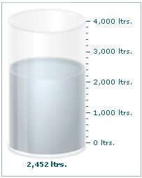

| Creating a simple Cylinder gauge |
We will create our first cylinder gauge to depict the amount of petrol left in a fuel tanker, whose capacity is 4000 liters. We'll show a value of 2452 liters. The final gauge will look as under: |
|  |
To create this gauge, our tasks can be broken down into the following segments:
|
| Data for the gauge |
| The XML/JSON for the gauge can be listed as under: |
The cylinder gauge for the above gauge will look as under: |
| See it live! |
| Explanation |
First of all comes the <chart> element which is the starting element for any chart/gauge/graph that you create using FusionWidgets. Now we define the lower and upper limits of the gauge scale. To define the limits, we use the lowerLimit and upperLimit attributes of the <chart> element. We also set the palette number using the palette attribute and the number suffix as 'ltrs' using the numberSuffix attribute. |
| After that, we set the value of the gauge using the <value> element: |
|
For detailed explanation on JSON data format click here. |
| And this finishes our first cylinder gauge. |